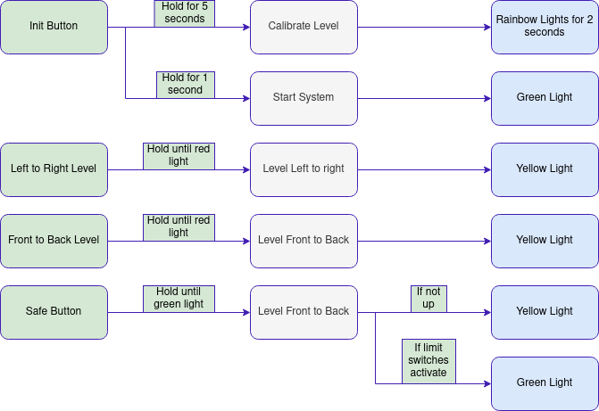

RV Auto-Leveling System
Brainstorm
The existing system in the RV is very simple: four switches, three of which actuate the cylinders up and down and the last turns the pump on or off. The cylinders are located at the front, rear left, and rear right. The standard leveling method is to actuate the front first to bring it slightly above the rear, then use the last two to bring the rear up to meet the front while staying level side to side.
Hardware
The minimum feedback required from the physical world: a couple of control inputs, the direction of gravity, and a voltage converter. Optionally, cylinder extension sensors could enable a more advanced system.
Going with the minimum would result in a simple add-in box installed in the dash, containing an IMU, the main processor, and leading to four buttons:
- Activate the system
- Activate the front-to-back leveling routine
- Activate the side-to-side routine
- Safe — retracts cylinders for the maximum expected retract time from greatest extension. Until the cylinders retract fully the system safes the ignition and prevents the engine from starting.
Adding cylinder extension meters would allow the safe to release earlier by watching the cylinders, and would also catch a cylinder failure to retract.
Operation
When the RV is stopped and the auto-leveling system is enabled:
- Run the front-to-back routine until the system stops actuating the front cylinder.
- Run the side-to-side routine until the system stops actuating the cylinders.
- Rerun front-to-back to ensure the RV is levelled front to back.
- Go outside and confirm cylinders are touching the ground.
To leave: hold the Safe button until the red LED turns off.
Software Framework
I have yet to have a good project to use Zephyr with but this seems like an ideal candidate. I need something easily transferable across hardware, based on a growing industry standard, and easily updatable. Zephyr ticks all of these boxes and also has the option of working through PlatformIO in VS Code.
Algorithm
The Problem
For the auto-leveling routines to work, the program needs to know the error it must correct. The error is calculated by taking the input from an IMU (MPU6050) and subtracting a set point to allow for calibration after installation.
Initially I was planning on calculating vector angles so the math would be expandable into directly calculating ideal cylinder lengths if I eventually added extension sensors. I was looking up methods to find vector angles using matrix operations and infinite series when I realised I didn't need to — the Zephyr driver directly gives X, Y, and Z accelerations, so I just need to minimise the error in X and Y directions.
Example IMU reading:
accel -5.882554 -6.485893 4.415782 m/s/sThe front-to-back routine needs to run until -5.882554 is closer to 0, and the side-to-side routine needs to zero out -6.485893, assuming set point 0, 0, 9.80665 m/s/s. The system also checks that the IMU is at rest — the vector magnitude should total approximately gravity (9.80665 m/s/s) within a configurable deadband.
Actuating the System
The system uses GPIO to bind 4 buttons to functions controlling program execution.
For anything to happen the main switch must be actuated, enabling the hydraulic motor to turn on when a cylinder is moving down. Without this switch the system does nothing as a safety measure. The system waits 1 second after a button press to filter accidental pushes. While the system is operating the corresponding button must be held for the entirety of the operation.
Implementation
Program Architecture

Holding the buttons triggers the appropriate actions through a state machine that detects when a button is being held and communicates to the motion-handling threads that they should act.
The non-volatile data issue is solved using a configuration file saved in the SPIFFS subsystem of the target ESP32. The file supports a version number to check compatibility before attempting to import attributes — without a version number the program can segfault while trying to import a non-existent setting. The file is saved in JSON, which is both easy to parse and fairly easy to read.
Threads
The program runs with 4 threads:
| Thread | Responsibility |
|---|---|
| Limit Checker | Watches for travel limits and faults |
| Button Watcher | Detects holds and communicates state changes |
| LED Controller | Drives status indicators |
| IMU Reader | Reads acceleration data; allowed to run on either core |
A fifth thread runs in diagnosis mode, outputting the internal state machine, IMU output, and button state. Each thread runs with ~4 KB of stack space; all are pinned to core 1 except the IMU task.
Testing
Testing on the actual RV system was not possible, so I built a test rig that shows outputs on LEDs and provides buttons to interact with the controller, with diagnostic output displaying on a laptop.